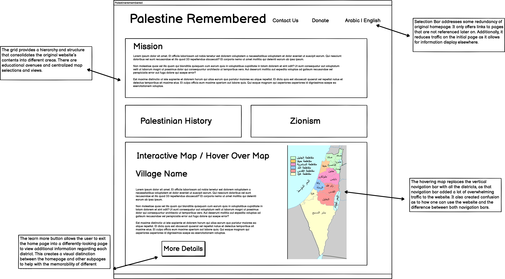

Responsive Redesign
Project Introduction
For this project, I chose the homepage of Palestine Remembered to redesign and restructure. I chose this website because it is an archive of Palestinian history and villages that were raided and ethnically cleansed. It serves as a resource of compiled documents, stories, and narratives that are often unheard of and on the verge of erasure.

Identifying Challenges in Original Website
Upon inspection of the Palestine Remembered website, I identify the following challenges:
Visual Redesign: Low-fidelity Wireframing
Below are my low-fidelity wireframes
Visual Redesign: Visual Design Style Guide
This is the style guide I followed when implementing both my hifi and html redesign.
The color shades are inspired by the watermelon icon in this website.

Visual Redesign: High-fidelity Wireframing
I include two versions of the hifi frames, some annotated with the grids used to code and others without the grid for the full visual experience.
The watermelon icon I use as a logo can be found in this website.
High-fidelity Wireframes
Desktop Screens


Tablet Screens


Phone Screens


Responsive Redesign Product
You can find my final product embedded below, and it is also linked here The redisgned website is responsive to Desktop, tablets, and phones.
Lessons Learned
Throughout this project, I experimented with grids and flex boxes to handle page layout. I also explored intentional programming and design for different-sized screens.
Most importantly, however, I learned the importance of value-based work that revolves around giving back and protecting indigenous communities whose existence is constantly denied and fought.